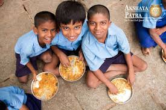

Moments of Change – Stories Behind the Frames
Every image you saw in the Moments of Change section carries a deeper story. Here is the meaning behind each frame, each moment, and each life touched.
“Community Connections That Spark Hope”
The first set of images from the Moments of Change section highlights the heart of our mission — bringing communities together. These frames capture donation drives, gatherings, and food distribution camps that unite people from different backgrounds. Each image symbolizes compassion in action, where volunteers and donors work hand-in-hand to support families in need.
Impact Area: Community Engagement & Food Support


“Behind Every Change Is a Team That Cares”
The tall vertical image represents the strength of our volunteer team — the driving force behind every initiative. Whether it is organizing food drives, managing donation programs, or executing relief work, our team works with dedication, empathy, and passion. This frame stands for unity, leadership, and the collective spirit that fuels our mission.
Impact Area: Volunteer Leadership & Team Spirit
“Our Journey in Frames – Stories of Lives Touched”
The blue ‘Journey in Frames’ box in your main section symbolizes the emotional backbone of our work. It reflects countless moments where acts of kindness changed someone’s day — or even their life. Behind every project is a story: a child getting food, a family receiving relief, or a community finding strength through support. This block represents our story, written through real human impact.
Impact Area: Growth, Mission & Human Stories


“On-Ground Relief: Helping Families Stand Again”
The final set of images showcases the essential services we provide—relief kits, clothing donations, and emergency food assistance. These frames capture the urgency of real-life situations where our team stepped in to help communities during difficult times. From hunger to disaster relief, each picture tells a story of dignity restored and hope rebuilt.
Impact Area: Relief Work & Basic Necessity Support
“Impact in Action — How You Help Shape Futures”
The Impact Card in your main layout highlights a powerful idea: every individual has the ability to change a life. Your donations, time, and kindness help fuel all the moments displayed in the grid. This section represents the transformation your contribution creates — turning challenges into opportunities and fear into hope.
Call to Action: Support | Volunteer | Donate
